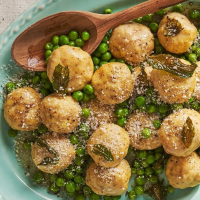

ODIN RECIPES

-
Total time:45 mins
-
Ingredients:
- 2 c. whole-milk ricotta
- 1 c. freshly grated Parmesan, plus more for serving
- 2 eggs, beaten
- Kosher salt
- Freshly ground black pepper
- 1 c. all-purpose flour, divided
- 1/2 c. (1 stick) butter
- 16 to 20 fresh mint leaves
- 1 1/2 c. sweet peas, fresh or frozen and defrosted